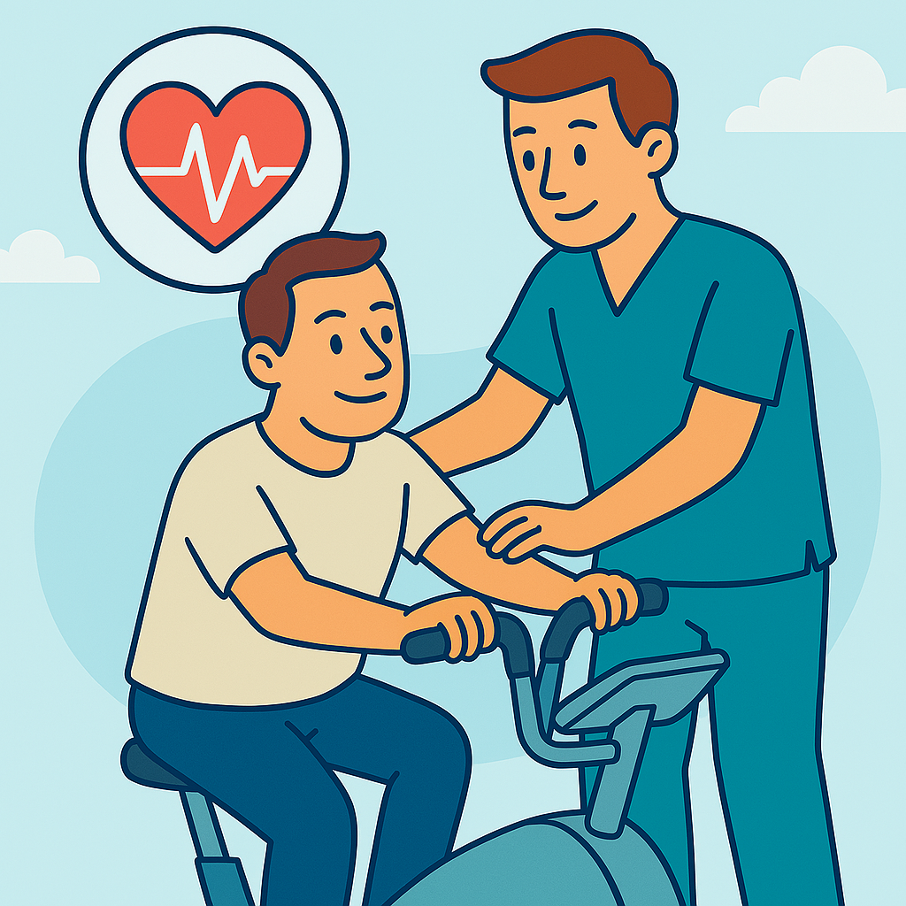

Fisioterapia Vascular
¿Qué es la Fisioterapia Vascular?
La fisioterapia vascular es una especialidad que se enfoca en mejorar la circulación sanguínea y linfática, ayudando a aliviar síntomas como la pesadez de piernas, hinchazón, calambres o varices. Está especialmente indicada en personas con insuficiencia venosa, linfedemas o problemas postquirúrgicos relacionados con el sistema vascular.
¿En qué consiste la Fisioterapia Vascular?
A través de diferentes técnicas terapéuticas, el objetivo es facilitar el retorno venoso y mejorar el drenaje linfático, reduciendo la inflamación y favoreciendo la oxigenación de los tejidos.
- Drenaje linfático manual: Técnica suave y específica que ayuda a movilizar el líquido retenido.
- Ejercicios circulatorios: Movimientos activos para estimular el flujo sanguíneo y mejorar la movilidad.
- Compresión terapéutica: Vendajes o prendas que favorecen el retorno venoso y evitan el estancamiento.
¿Por qué es tan importante?
Una buena circulación es esencial para el funcionamiento óptimo del cuerpo. La fisioterapia vascular ayuda a prevenir complicaciones como úlceras, trombosis o infecciones, mejorando significativamente la calidad de vida del paciente. Es especialmente útil en personas mayores, con movilidad reducida o que han pasado por intervenciones quirúrgicas.
En nuestra clínica, aplicamos tratamientos personalizados, combinando técnicas manuales con ejercicios específicos y consejos para el autocuidado, siempre desde un enfoque humano y cercano.
¿Necesitas más información?
Si tienes alguna pregunta o necesitas más detalles sobre nuestros servicios, ¡no dudes en contactarnos!
Contáctanos